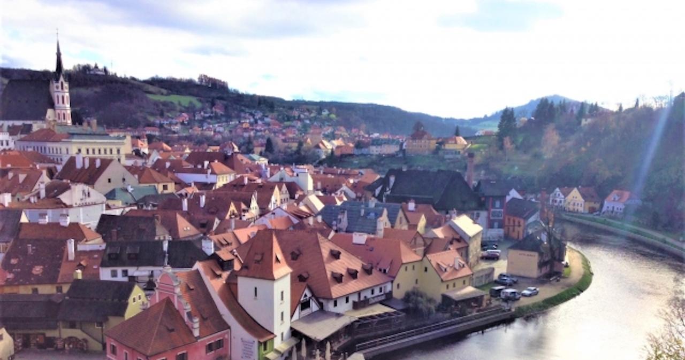

演じるにあたって
２．主要キャラクターのイメージはサイトTOPよりご覧いただけます。
３．()は漢字の読み方、または、キャラクターセリフ中の動作を表現します。
４．ーーXXX は状況や動作を表現するト書きです。
５．ーーーーー はシーン転換や間を開けることを意味します。
元魔王 旅人 年齢：数千歳
魔王の娘 年齢：１１
劇団の女優 踊り子 年齢：２２歳
魔族 呪術師 魔王城の執務間 数百歳（人間年齢２５歳前後）
演劇団の座長 元魔物 年齢：数百歳

ーー過去の回想から物語が始まる。
ーー魔王城来賓室にて、オレンドが心ここにあらずな感じでサラと応答する。
ーーーーー
サラ：それで、傀儡師は戦争を離脱したいと、そういうことですか？
オレンド：そうさ・・・俺たちの一族はもう半分も残っちゃいねぇからよー。
サラ：そうですか。どの族長も苦しんでいます。それでも皆苦心して戦っていることをご存知ですか。・・・といっても、今のあなたには何も響かないでしょうが。
オレンド：・・・さぁな、俺は死んだらしい族長の代わりにここにいるだけだからよー。
サラ：でしょうね。
オレンド：・・・
サラ：ふん。傀儡師の長と聞いて呆れるわ。
オレンド：・・・好きにしてくれ・・・。
サラ：・・・あなたね・・・はぁ、いいわ。魔王様に離脱の可否を確認してきます。
オレンド：・・・
サラ：では、少々お待ちください。失礼します。
ーーーーー
ーー魔王の部屋
ヴェル：ふむ。この度の戦いは大敗だったか。
サラ：申し訳ございません。ヴォルカス様。
ヴェル：・・・よい。ギルディめ・・・。して、どの程度やられたのか。
サラ：此度の戦、海戦で３隻の戦艦、１０頭の海龍族。陸上で２台の移動砲台、と、多数の傀儡師がやられました。次に同じ規模での侵攻があれば、この魔王城まで手が伸びるかもしれません。
ヴェル：ふむ。・・・まさに、大敗だな。
サラ：・・・そうですね。
ヴェル：ふむ。
サラ：それと、もう一つ。今回の大敗を受けて、傀儡師の長(おさ)を名乗るオレンドという者より、戦争より離脱したいと申し入れがありました。
ヴェル：ほう。
サラ：どういたしましょうか。
ヴェル：・・・かまわぬ。が、一度顔を見ることはできるか。
サラ：かしこまりました。
ヴェル：して、そのオレンドとやらは、どこにおる。
サラ：来賓室に通しております。
ヴェル：うむ。
サラ：こちらです。
ーーーーー
ーーサラとヴォルカスが来賓室に着く
サラ：（ドアをノックする）失礼するわね。
オレンド：・・・。
サラ：お待たせしました。さて、ただ今魔王様に戦線離脱の件、伝えてまいりました。
オレンド：・・・そうかい、で、どうだったんだい。
サラ：離脱を許可するとのことです。
オレンド：・・・そうかい。
サラ：それと・・・魔王様が直接面会されると仰ってます。
オレンド：・・・そうかい。
サラ：・・・無礼のないように。ヴォルカス様、どうぞ。
ヴェル：ふむ。
サラ：では、私はこれで。外に控えておりますので、ご用があればお呼びください。
オレンド：・・・
ヴェル：ふむ。
オレンド：・・・
ヴェル：そなたが、オレンド、か。
オレンド：・・・そうさ。
ヴェル：して、此度の戦は、大敗であったな。
オレンド：・・・そうだな。
ヴェル：私は、皆にすまない、と思っている。人族の老師が率いる侵攻において、私は頼りない王だ。
オレンド：・・・
ヴェル：して、そなたに、仲間はおるか。
オレンド：・・・いる、けど、いねぇ。名前しかしらねぇ。
ヴェル：ほう。
オレンド：・・・。
ヴェル：私はそなたの求めに応じる。その見返りとして、話してはくれぬか。
オレンド：・・・聞いてもなんも面白くねえぞ？
ヴェル：かまわん。
オレンド：・・・傀儡師は、姿を持たない。
ヴェル：ふむ。
オレンド：その時に取り憑いた傀儡が俺たちの姿であり、人形(ひとがた)にも、道具にもなることができる。
ヴェル：ふむ。
オレンド：中から傀儡を操ることもできれば、優れた術者は、外からも操れる。だから、俺たちは姿を持たない。一つの場所にとどまることもない。会うこともない。
ヴェル：ふむ。して、なぜそなたがその見知らぬ傀儡師のため、ここへ来たのだ。
オレンド：・・・傀儡師がなぜ死んでいくか、魔王のあんたは知ってるか。
ヴェル：ほう。聞かせてみよ。
オレンド：力の弱い傀儡師は、大人数でやりあう戦争にはめっぽう向いてねぇ。いいとこ、他の力の強い魔族の武器に取り憑く程度さ。人族の大型魔導車が来たら、武器を放り出して逃げちまったあと、武器ごと踏み潰されてお陀仏さ。
ヴェル：ふむ。
オレンド：もともと戦争には向かない力さ。
ヴェル：同族の死が重いか。
オレンド：・・・そうさ。
ヴェル：ふむ。して、オレンドよ。そなたは確かに、族の中で最も優れた術者のようだが・・・
オレンド：・・・。
ヴェル：その選択、私であればとらぬ。その術、他のものにくれたらどうだ。いらぬのだろう。
オレンド：・・・！・・・
ヴェル：ふむ。では、好きに生きると良い。ただ、逃げるのならば死に物狂いで逃げることだ。（立ち上がって）サラよ！
サラ：ヴォルカス様。ここに。
ヴェル：この者を城の外まで、見送るのだ。
サラ：わかりました。
ヴェル：（Ｍ）オレンドは優れた傀儡師として生まれ、右も左もわからぬうちに族の長となった男であった。
サラ：先日の傀儡師の一件、本当に良かったんですか。
ヴェル：ふむ。力ある傀儡師だ、しかし、未熟な男だ。
サラ：おっしゃる通りです。
ヴェル：己が選んだことであろう。戦うばかりが道ではない。
ーーーーー
ーー今の時間に戻り、移動車の中、寝込むオレンドと心配するイーラ、シャンディ、ヴェル
ーーーーー
シャンディ：オレンド・・・。
イーラ：ただいまー！
ヴェル：今もどった。
シャンディ：おかえりなさーい。
イーラ：・・・オレンド、起きた？？
シャンディ：まだ。。。
イーラ：そっか・・・。
ヴェル：ふむ。・・・大丈夫だろう。
シャンディ：そうなんですか？オレンドは大丈夫なんですか？
ヴェル：大丈夫だ。穏やかに記憶がオレンドに戻っていくのを感じておる。
シャンディ：そう・・・ですか。
イーラ：・・・なら！大丈夫だね！
シャンディ：イーラちゃん・・・？
イーラ：ヴェルが大丈夫って言って、大丈夫じゃなかったことはないんだから！オレンドは、きっと大丈夫！
シャンディ：・・・ふふふ、ありがと。イーラちゃん。
オレンド：・・・うぅ・・・。
ーーーーー
ーー場面は過去に変わり、魔王城でサラとヴェルが会話する。
ーーーーー
ヴェル：ふむ。サラよ。
サラ：どうされましたか。
ヴェル：傀儡師のことはどうなっておる。
サラ：死人（しびと）を使っていますが保護は難航しております。・・・近頃、戦争を離脱した傀儡師をよく思わない魔物たちが、傀儡師をひどく扱っています。
ヴェル：ふむ。どのような話か。
サラ：・・・傀儡師を人形に封じ、四肢を繰り返しもぎる。岩に取り憑かせ、動かなければ海深くへ放るなど。
ヴェル：ほう。して、オレンドという男はどうしておる。
サラ：さぁ。魔王城の周囲にはいないみたいです。
ヴェル：・・・そうか。
サラ：助けに行くのですか？
ヴェル：ふむ。助けはせぬ。
サラ：・・・・そうですか。ヴォルカス様がそのようなお方なので、皆、忠義を立てております。
ヴェル：そうか。・・・サラよ。頼みがあるのだが。
サラ：なんでしょうか。
ヴェル：泥を払う布を、追って届けてくれ。
サラ：・・・わかりました。お気をつけて。
ーーーーー
ーーオレンドが大陸端の森で一人ぼんやりと嘆く。そこにヴェルが現れる。
ーーーーー
オレンド：あぁ、あぁ・・・イトが死んだ、ベットラが死んだ、ジュゼットも死んだ・・・あぁ、おめぇら・・・。
オレンド：あぁ、あぁ、あぁ・・・俺は待ってるのに・・・誰もこねぇ、一人もこねぇ。
ーーヴェルがそこに到着する。
ヴェル：ここにおったか。
オレンド：カティア、ぺぺタノ・・・。
ヴェル：そなたは、そこで、何をしておる。
オレンド：・・・！？・・・おまえ、、、
ヴェル：ふむ。見事な柳（やなぎ）の森である。
オレンド：ははは。。。なんだよ。笑いに来たのか。なら、間抜けでおもしれーだろ。
ヴェル：ほう。そうみえるか。
オレンド：・・・はあー。もうどうでもいい。
ヴェル：ここは、傀儡師の生まれ落ちる場所か。
オレンド：・・・そうさ。
ヴェル：ふむ・・・。ほう、立派な木だ。これがそなたの親か。
オレンド：・・・そうさ。
ヴェル：特に秀(ひい)でておる。ふむ。
オレンド：なぁ、もう帰ってくれよ。
ヴェル：なぜだ。
オレンド：・・・
ヴェル：なぜ帰らねばならぬ。
オレンド：・・・鬱陶しいんだよ・・・。
ヴェル：ほう。
オレンド：・・・鬱陶しいんだよ！俺にかまうんじゃねぇ！！
ヴェル：ふむ。わからんな。そなたはここで傀儡師が全て死ぬのを、ただ待っておるのだろう？暇な男が何を鬱陶しがる。
オレンド：・・・！！てめぇ・・・元はといえばてめぇが・・・
ヴェル：ほう。続けよ。
オレンド：わかってたんだろーがよ！こうなることが！あの時、俺が戦争の離脱を言った時、わかってたんだろーがよ！
ヴェル：当然だ。
オレンド：・・・！お前は焚き付けた！俺が、傀儡師が大した力もねーくせに、デケェ口叩いたから！
ヴェル：ほう。
オレンド：うざってーから、魔物同士で殺し合うこともわかって！
ヴェル：では、聞くが。なぜ、逃げておらぬ。なぜ、一人でも多くの傀儡師を救おうと戦っていないのだ。
オレンド：うるせえうるせえうるせえ！！
ヴェル：ふむ。
オレンド：大体・・・よ・・・お前が・・・お前が・・・魔王なんだろ・・・
ヴェル：そうだ。
オレンド：くそ、くそ、くそ！！！とめろよおお！じゃあ！！！魔物の王なんだろおおおお！！！(獲物を投げる)
ヴェル：ほう。私に力を振るうか。
オレンド：くそ、くそ、当たれよおお！！
ヴェル：術は達者だが、怒りに任せた投擲(とうてき)では当たらん。ほれ、身を守るのだ。(お腹を殴る)
オレンド：ぐっふぅ！！・・・げほげほ(起き上がる)くそ、くそ、くそおおおお！！！(ナイフを手に斬りかかる)
ヴェル：なぜ、長が放り出した族を私が守らねばならんのだ。足が空いておるぞ！(足払い)
オレンド：おわあっ！(倒れる)
ヴェル：受け身も取れんのか。起きるのだ。（顎を蹴上げる）
オレンド：ぎいいい！
ヴェル：反撃もできぬか。ふむ。(弾き飛ばす)
オレンド：ぐ、うあうわあああ・・・(柳にぶつかって)があああっ！！
ヴェル：では、そなたの親と共に葬（ほうむ）ってやろう。腑抜けはいらんのでな。
オレンド：・・・お前が・・・お前が・・・戦争なんかおっぱじめなければ・・・。ぶっ殺してやる。
ヴェル：ほう。力の差もわからんのか。愚か。
オレンド：関係ねぇ・・・。
ヴェル：ふむ。今、また傀儡師が死んだぞ。
オレンド：うああああああああ！！！！ざけんじゃねぇえええ！！
ヴェル：ほれ、怒りに飲まれるでない。(お腹を殴る)
オレンド：ぐっふぅ・・・げほげほ！・・・助けろよ・・・助けてくれよ・・・くそ・・・くそ・・・(フラフラの中立ち上がるように)くそがああああああああ！
ヴェル：ふむ。まだかかってくるか。
オレンド：許さねえええ！お前が魔王なんだろおおおおお！！！許さねえええええええ！！！
ヴェル：ふむ。好きにするが良い。そなたが飽きるまで付き合ってやろう。
ーーーーー
ーー時は流れて、サラが到着する。オレンドはぼこぼこにされ、ヴォルカスがそれを眺めている。
サラ：何かと思って、布を持ってきてみれば。ヴォルカス様、なんですかそれは。
ヴェル：ふむ。
オレンド：ぜぇーはぁーぜぇーはぁー
サラ：早く泥を落としてください。どうぞ。
ヴェル：ふむ。もう１つ布はあるか。
サラ：用意してます。どうせこんなことだろうと思いました。
ヴェル：ふむ。サラよ。あとは頼む。オレンドにすまぬ、と伝えておいてくれ。
サラ：へ？へ？・・・はぁ・・・(オレンドに)大丈夫ですか？
オレンド：・・・なんだよ・・・なんなんだよ・・・
サラ：どうされたんですか。
オレンド：俺は・・・未熟すぎたの、かなぁ・・・なぁ・・・
サラ：そうですね。今のあなたでは、族は愚か、数名の傀儡師ですら守ることはできないでしょう。
オレンド：・・・くそ・・・強くなりてえ・・・強くなりてえよ・・・
サラ：無理ですね。
オレンド：・・・この女・・・うぜぇ・・・
サラ：結構です。皆が苦心している中で、逃げ出すとはどういうことか、あなたにはわからないのですか。私は逃げ出すことが悪とは思いません。時にそれをするべきと思います。ですが、今回のあなたは中途半端でした。愚かです。
オレンド：・・・わかってるよ。わかってるよ・・・
サラ：・・・あと。私の力で約半数の傀儡師は保護しました。しかし、残りは死にました。力及ばずで、すみませんでした。
オレンド：・・・俺の、俺の分が丸ごと死んだんだ・・・俺はよ・・・
サラ：では、要件は伝えましたので。
オレンド：・・・俺さ・・・
サラ：まだ何か用ですか。
オレンド：・・・強くなる、強くなってよ、いつかほんとの長になってよ、大切な仲間みんな守れるような長になるよ・・・
サラ：はぁ、なぜそれを私に言うんですか。
オレンド：・・・わかんねぇよ。わかんねぇけど、俺が長になったら、あんたも守ってやるから・・・俺、もう折れねぇよ・・・
サラ：はぁ。では、その時はお願いしますね。布です。泥でも涙でも、好きなものを拭いてください。魔王城でお待ちしています。
ーーーーー
ーー魔王城へオレンドが訪れる
ヴェル：オレンドよ。そなたの願いは聞き届けよう。
オレンド：ありがとうございます！
ヴェル：して、その姿はなんなのだ。
オレンド：へ？あぁ、先日の傀儡が壊れてしまったので、変えました。
ヴェル：ふむ・・・確かに傀儡師とは不便なものだな。姿・形や声も変わるのだな。
オレンド：そうです。
ヴェル：ふむ。
オレンド：あ、あー・・・わかりにくくて、すみません。・・・そーりー、そーり？・・・こんなんでいかがでしょう。
ヴェル：ほう。まぁよい。好きにせよ。
オレンド：あ、、ありがとうございます。。。さんきゅー、なぁ。
ヴェル：オレンドよ。しばらく、城内で勤めると良い。
ーーーーー
ーー時は今に戻り、オレンドが目覚める。
ーーーーー
オレンド：う・・・
ヴェル：ふむ。
オレンド：・・・いてて・・・あったまいーて・・・
ヴェル：起きたか。
オレンド：・・・あぁ。ヴェル・・・。
ヴェル：ふむ。記憶は戻ったか。
オレンド：・・・あぁ。全部思い出した。。。
ヴェル：ほう、そうか。ふむ。
シャンディ：くぅー。。。すーぅー。。。おれんどー・・・。
ヴェル：皆がそなたの帰りを待っておった。
オレンド：・・・シャンディ・・・
ヴェル：して、オレンドよ、魔力はあるのか。
オレンド：あ・・・？うーん、、、いや、ない。
ヴェル：そうか。ふむ。大丈夫か？
オレンド：え？あー・・・ちょっとまだ頭いてーけど、大丈だ。もんだいねぇ。
ヴェル：ほう。では、私は部屋へ戻る。イーラが待っておるのでな。
オレンド：お、おう。なぁヴェル。
ヴェル：ふむ。
オレンド：・・・さんきゅーな。やっぱ、運命の出会いだったな。
ヴェル：ふむ。そうだな。
オレンド：はっはっは！・・・あ、痛てて。
ヴェル：ふむ。・・・オレンドよ。
オレンド：ん？
ヴェル：そなたの魔素がイーラの元へ戻った。
オレンド：・・・そうかい。
ヴェル：ふむ。不思議なこともあるのだな。では、オレンドよ、良き夢を。
オレンド：お、おう。おやすみゔぇる。
シャンディ：くぅー。すーぅ。オレンドー。オレンドー・・・。
オレンド：・・・おぉ・・・ありがとう、シャンディ、さんきゅーなぁ・・・。随分寝こけてたみてーだし、明日から頑張るかー！・・・俺は、シャンディがいてくれて、はっぴーだぜえ。
ーーーーー
ヴェル：（Ｍ）翌日より、オレンドは調子を取り戻した。相当心配をしたのか、拍子抜けをしたシャンディの顔がなんとも見ものであった。それからは、何事もなかったかのように旅が続くのであった。なんとも、ひょうきんな男だ。して、私たちはゆっくりと、確実に目的の地へ近づいていく。
ーーーーー
ーー車の中でイーラとシャンディが会話する
イーラ：よし！できた！
シャンディ：おめでとー！イーラちゃん、お疲れ様。
イーラ：うん！うふふ。嬉しいなぁ！ママのお話。
シャンディ：きっと皆喜んでくれるわよ。
イーラ：うん！
シャンディ：オレンドもちゃんと色々と教えてくれたかしら？
イーラ：うん！ママのことも、ヴォルカスのことも、私のことも、教えてくれた！
シャンディ：そうなのね、よかったわね。じゃあ、後でみんなに読んでもらいましょうか。
イーラ：うん！ふー！疲れたー！
シャンディ：お疲れ様。何か飲み物でも持ってくる？
イーラ：うーん・・・あ！ね、シャンディはコーヒーって好き？
シャンディ：コーヒー？私は好きよ。でも、最近はあんまり飲んでないかなぁ。
イーラ：そっか。
シャンディ：どうしたの？
イーラ：ううん。ヴェルはね、コーヒーが好きなの。ちょっとだったけど、うちにいた時はいつもコーヒーを飲んでたなぁって！
シャンディ：あら、そうだったの！
イーラ：うん！
シャンディ：・・・じゃあ！淹れ方を教えてあげよっか？
イーラ：いいの！？知りたい！
シャンディ：いいわよー！じゃあ、お湯を沸かすから、ちょっと待っててね。
イーラ：うん！ありがと！
ーーーーー
ーーお湯が沸いたので、二人ともキッチンへ行く。
シャンディ：さ！お湯が沸いたわよー！
イーラ：はーい！(イーラくる)
シャンディ：さて、で。コーヒーは豆を挽くところから。この仕掛けに入れて・・・こうやって回すの。それ！ぐーるぐる。
イーラ：わ！へぇ〜！
シャンディ：コーヒーの香りがしてくるでしょー？
イーラ：わぁ！ほんとだ！
シャンディ：さ、イーラちゃんもやってみて。はい。
イーラ：うん！ぐーるぐる・・・。なんかたのしー！
シャンディ：うふふ。でね、豆が挽けたら、今度はこれ、抽出器よ。
イーラ：ねぇ、これはなに？
シャンディ：この上に粉を出して、上からゆっくりお湯をかけるの。そうすると、この抽出機の横からコーヒーが出てくるのよ。
イーラ：へー！コーヒーって大変なのね！
シャンディ：そんなことないわ、どんな飲み物も、いろーんな人が手間暇かけて作っているのよ。
イーラ：へぇー！教えてくれてありがと！
シャンディ：うふふ。
イーラ：ね！やってみてもいい？
シャンディ：いいわよ、そーっと、ゆーっくりね。
イーラ：そーっと・・・そーっと・・・あ！コーヒー出てきた！
シャンディ：うふふ。イーラちゃん上手よー。
イーラ：ゆーっくり、ゆーっくり・・・ね！これくらいかな！？
シャンディ：そうね。はい！イーラちゃんの初コーヒー！
イーラ：やったー！ね、美味しいかな？
シャンディ：自分で淹れた初めてのコーヒーだし、きっと美味しいかもね。
イーラ：うん！いただきまーす。・・・ずず・・・うっ（苦い）
シャンディ：どう？どう？
イーラ：う、うむ。よき味である。
シャンディ：ぷ・・・ぷくく・・・あら、そっくりね。
イーラ：う、うむ。
ーーーーー
ヴェル：（Ｍ）その後も、私たちの旅は続き、ついにアキュエリの街についたのだ。
ーーーーー
ーー車の中でオレンドが目的地への到着を告げる
オレンド：お疲れお疲れー！さーて、えぶりわーん！やーっとやっとー！アキュエリに着いたぜー！さぁ！降りた降りたぁ！
ヴェル：ふむ。
シャンディ：二人とも、長旅、ご苦労様でした。
イーラ：ううん！大丈夫！とーっても楽しかったよ！
オレンド：はっはっはー！俺も楽しかったぜぇ！
ヴェル：ふむ。
シャンディ：イーラちゃん、アキュエリの街をちょっと見に行かない？
イーラ：うん！いきたい！
シャンディ：ふふふ。アキュエリはね、とーってもひろーい街なのよー！それに、すごい綺麗なのよー！
イーラ：そうなの？
オレンド：そうさー！人族でいっちばん栄えている街さぁ！
イーラ：へぇ〜！
オレンド：お！そーだ！いいこと考えたぜー！はっはっは！
ーーーーー
ーー街の高台へ向かって、シャンディがイーラの目を隠しながら、４人は歩く
ーーーーー
イーラ：ねぇ、まだぁー？
シャンディ：うふふ、もうちょっと。あ、そこ階段あるから、足元気をつけてね。
ヴェル：ふむ。どこに向かっておるのだ。
オレンド：んー？ちょーっとした高台さ！あとちょっとあとちょっと！
ヴェル：ほう。
オレンド：俺のお気に入りの場所さ！
シャンディ：気をつけてね。はい、よーいっしょ、よーいっしょ。
イーラ：よーいっしょ、よーいっしょ。
ーー街のちょっとした展望台に到着する
ヴェル：・・・ほう。
オレンド：なぁー！いーだろー！びゅーてぃふぉー！
ヴェル：ふむ。
オレンド：なー。
ヴェル：ふむ。見事だ。
シャンディ：よーいっしょ、、、さぁ！ついた！ほら、イーラちゃん。心の準備はいいかしら。
イーラ：うん！楽しみー！どきどきするー！
シャンディ：よし！じゃあ、離すわよー！３、２、１、さあ！
イーラ：ふぁ！まぶし・・・ほえ・・・！？わあー・・・・！
シャンディ：・・・どう？
イーラ：すごい、すごーい・・・・おっきいー・・・・。わあぁーーー・・・・。
シャンディ：そうでしょー！ここが、アキュエリよ！
イーラ：すっごーい・・・こんなにおっきな街があるんだぁ・・・。
オレンド：だーろー。
イーラ：・・・すごいね、ヴェル。
ヴェル：・・・ふむ。
イーラ：はーーー・・・・・わわ！見て！車が街を走ってるよ！
シャンディ：そうね。アキュエリは広すぎて、街中(まちなか)で貨物用車が走ってるわ。端から端まで、それでも２日はかかるのよ。
イーラ：わぁ・・・！ね！あれは？
シャンディ：あれは人専用移送車よ。魔導移送車の一つで、たくさんの人が乗れるのよ。
イーラ：へぇ〜・・・！ねぇねぇ！街の中にあんなに川がある！なんで？
オレンド：それは運河さ！昔は船を使って物を運んでたらしいぜー！最近は車が多いけどなー！
イーラ：へぇ〜！あ！あれは！？・・・でっかーい建物ー・・・。あれは、教会？
ヴェル：ふむ。アキュエリは人族の神が神代に建てた大聖堂を中心に発展した商業都市である。
シャンディ：そう。戦争でも、唯(ただ)の一度も傷つくことのなかった、私たちにとっての希望の街。
イーラ：へぇ〜。
シャンディ：そ・れ・と。
イーラ：それと？
シャンディ：がっぽり儲けられるって意味でも、希望の街！
オレンド：はっはっは！シャンディはがめついなぁ。
シャンディ：現実的、って言ってくれるかしら。
オレンド：はっはっは！そーりそーり。貴族、金持ちはもちろん、商業で成功を夢見る夢想家が集まる、俺たちみーんな、えーぶりわんの夢と希望の街、そ、れ、がー、アキュエリさぁ！
イーラ：へー！
シャンディ：綺麗でしょー！
イーラ：うん！きれー・・・
ヴェル：ふむ。
イーラ：・・・ヴェル。ありがと。
ヴェル：・・・ふむ。かまわん。
イーラ：にへへ。
ヴェル：・・・そなたが喜ぶのであれば。
イーラ：え？・・・う・・・にへへ。
オレンド：おんや〜？おやおやー？ゔぇええるううう。
ヴェル：茶化すな。
シャンディ：っさ！ここで問題です。
イーラ：もんだい？
シャンディ：っそ！アキュエリって名前の意味は、なんでしょー！
イーラ：えー！うーん。。。なんだろー。。。
ヴェル：ふむ。
イーラ：うーん・・・ねぇ、ヴェルは知っているの？
ヴェル：うむ。
イーラ：そっか、うーん。。。
オレンド：はっはっは！で、アンサーはなんでしょー？ぎぶぎーぶ！
シャンディ：答えはね、披露宴、って意味なの。
イーラ：披露宴？
オレンド：そうさー！世界でいっちばん立派な大聖堂で男女が愛を誓い、そしてえ！繁栄の神様に末代まで発展(はってん)をお祈りするのさー！
シャンディ：っそ。そのあとは賑やかな街で一晩中祝い合うの。そんな様子から、披露宴、って名前がついたのよ。素敵でしょー！
イーラ：わぁあー。すてきー。
ヴェル：ふむ。
イーラ：ねぇヴェル、私もあそこで結婚式、できるかな？
ヴェル：・・・ふ、ふむ。
オレンド：およよ？ヴェル、困ってるのかなー！？はっはっは！
シャンディ：ふふふ。
イーラ：ね、人族の神様と繁栄の神様って、誰？
ヴェル：ふむ。いずれともギルディだ。
イーラ：そっか。・・・ね？ギルディは金と権力の神様じゃないの？
ヴェル：そうだ。それも一つの見方である。
オレンド：・・・あっはっはー・・・そりゃ気になるよなー。
シャンディ：そっか、、、あなた達にとっては仇（かたき）だものね・・・。
オレンド：・・・あー、んー・・・俺は、嫌いじゃないけどなぁ！
イーラ：そ、そうなの？オレンドはなんで嫌いじゃないの？
オレンド：んー。ずーっと戦ってたけどさ。人になってみて、こーんなすんげー街を見て、気づいたのさ！
イーラ：何に気づいたの？
オレンド：あー、なんだ、上手いことは言えないんだけどさ、そいつにもきっと大切なものがあるんだって、ことさ。俺は人じゃないけどな！・・・それに。
シャンディ：それに？
オレンド：あー、あっはっはー！魔王に勝ってんだ！ほんとにすんげーやつなんだろうなぁってよ！
ヴェル：・・・ふむ。そうであろう。
シャンディ：・・・あ、あなた、それはちょっとデリカシーがないんじゃないかしら・・・。
ヴェル：・・・かまわん。
イーラ：ヴェル・・・
ヴェル：イーラよ。
イーラ：なに？
ヴェル：そなたは、良いのか。
イーラ：うーん・・・ママのことは寂しいけど、会ったことがないから、わからないの。。。だから、私も、オレンドと一緒、かな。こーんなにすごい街を作った神様だもん。うん。人の神様だから、きっと人を守らないといけなかったんだと思うの。
ヴェル：・・・ふむ。そうか。
シャンディ：イーラちゃんは強いのね。
オレンド：おぉおぉおぉ！いいいいらちゃああん！
イーラ：わ！ふぁ！
ヴェル：・・・ふむ。して、興行の予定はどうなっておる？
シャンディ：えっと、３日後から４日間。中心街にある大劇場を取ってあるわ。
ヴェル：どの程度の客が入るのだ。
シャンディ：えっと、、、１０００人くらいかしら。
ヴェル：・・・ほ、ほう。
イーラ：・・・ヴェル、緊張してるの？
ヴェル：・・・そうだ。
オレンド：はっはっはー！そりゃそうだろー！今までの公演とは桁が１つ、下手すりゃ２つ違うからなー！
イーラ：へー・・・１０００人も・・・すごーい。。。
シャンディ：うふふ。さーて、頑張らなきゃね。
オレンド：おおよ！さーてさて、忙しくなるぜえー！びーじーびーじー！帰って支度だー！いくぞー、ものどもー！はっはー！
ヴェル：ふむ。
イーラ：ヴェル、大丈夫？
ヴェル：・・・どうした、イーラよ。
イーラ：なんか、歩き方が、、、変だから・・・。
ヴェル：・・・ふむ。大丈夫だ。最善を尽くすこととする。
イーラ：・・・にへへ、ヴェルがんばってね！
ーーーーー
ヴェル：（Ｍ）戻ってからは皆で忙しなく、劇場の設営、リハーサルを進めていく。
ーー演劇の準備をバタバタと進める。（テンポ上げて頑張ってください。）
オレンド：おーらい！おーらい！あー、ちょっと右だなぁー！おーし、おーし！そこ！おっけー！
シャンディ：座長、準備の状況は？
オレンド：んー！順調、おーるらいと！俺にしては、珍しくなぁー！
シャンディ：そうですか。あ、ヴェルさん、その荷物はそこにおいてください。
ヴェル：うむ。
シャンディ：しっかし、ヴェルさん、助かっちゃうわー！
ヴェル：ふむ。
シャンディ：あなたどれだけ力もちなのよ！どのくらいまで持てるの？
ヴェル：ふむ。わからぬ。限（かぎ）りまで物を手にしたことがないゆえ。
シャンディ：おぉー！すっごーい！
イーラ：シャンディー！これでいい？
シャンディ：小道具さん、ありがとう。うん、大丈夫！
イーラ：こ、小道具さん？
オレンド：はっはっはー！シャンディは仕事になると人が変わるよなぁー！
シャンディ：あら。ごめんね、イーラちゃん。ありがとう。
オレンド：あっはっは！(他のメンバーに向かって)よーし、そうそう！照明そんな感じ！いいねー！ぐっどぐっどー！
シャンディ：あ！そうだ、動力源の魔鉱石(まこうせき)が４日分はなかったと思うから、買い出しに行ってくるわね。
オレンド：はいよー！あ、イーラ、そこの縄をこっちにくれるかーい！
イーラ：はーい！
オレンド：さんきゅーなぁ！
シャンディ：じゃあ、ヴェルさん、もう少し荷物持ち、手伝ってもらえるかしら。
ヴェル：うむ。かまわん。
オレンド：おーい、下誰かいるかー！うーし、縄おろすぜー！
シャンディ：あ、ちょっと待ってね。・・・(他のメンバーに向かって)誰かー！ここ塗り漏れてるから、美術さんに伝えてもらえるかしらー！・・・さ、行きましょう。
ーーーーー
ヴェル：（Ｍ）またたく間に空の劇場が舞台へと変わっていく。見事なものだ。
ーーーーー
ーー舞台が出来上がって劇場の楽屋で休憩に入る
イーラ：ふえー。疲れたー。
ヴェル：ふむ。イーラよ。これを。差し入れとのことだ。
イーラ：ねぇ、これなーに？
ヴェル：ふむ。エピという。(フランスパンの一つ)
イーラ：へぇ〜！
ヴェル：麦穂(むぎほ)の形をした、かた焼きのパンだ。手にしやすい形ゆえ、支度の時などに好まれるのだ。
イーラ：どうやって食べるの？
ヴェル：ふむ。固く焼いてあるゆえ、勇ましく噛み付くのだ。がぶっ！(豪快に食いちぎって、もぐもぐ、ごっくん)こうである。
イーラ：へぇー！やってみるね！あー・・・がぶっ！ん、ん、んーー！(噛みちぎれない)
ヴェル：ふむ。
イーラ：うー、、うー！（食いちぎって、もぐもぐもぐもぐもぐごっくん）おいしー！あー・・・がぶっ！
ヴェル：ふむ。焦らぬことだ。
イーラ：あー・・・がぶっ！（もぐもぐ）
ヴェル：・・・ふむ。(食べ物を配っている人に)すまんが、こちらにも一つ、水をもらえるか。
イーラ：あー・・・がぶっ！（もぐもぐ）あー・・・がぶう！・・・！？・・んぐぅ！んー！んー！
ヴェル：ふむ。・・・イーラよ、水だ。
イーラ：んっ！んっ！(水を飲む)・・・ぷはぁ！助かったぁ・・・ヴェル、ありがとー。。。
ヴェル：ふむ・・・焦らぬことだ。
イーラ：てへへー・・・。
ーー休憩が終わるか、終わらないかくらいのタイミングで少ししてシャンディが来る
シャンディ：さ！みんな、リハーサルやるわよー！後ちょっと！頑張りましょう。
ヴェル：ふむ。
イーラ：ヴェルがんばれー！
ヴェル：ふむ。・・・イーラよ、そなたも共に来ると良い。
イーラ：ふぇ？
ヴェル：イーラの渾身の処女作だ。
イーラ：・・・いいの？邪魔にならないかな・・・。
オレンド：はっはっはー！当然さ！
イーラ：わっわ！？
オレンド：脚本家は演者とおんなじだけ立派さ！ぐっどぐっどー！
イーラ：そうなの？
オレンド：はっはっはー！そうさ！脚本家だけじゃないさ！みーんな！おんなじだけ立派さ！
イーラ：でも・・・
オレンド：シャイガールだなぁ！舞台だって、１番にイーラにみて欲しいって言ってたぜー！
イーラ：本当？
オレンド：ほんと！ほんとさあ！
イーラ：・・・そっか。そっか！
ヴェル：ふむ。
イーラ：いく！私もみる！
オレンド：はっはっはー！よっしゃー！見に行こーぜー！ごーごー！
ーーーーー
ーー劇場に入る。
シャンディ：イーラちゃんどうぞー。
イーラ：わぁー！すごい・・・！
ヴェル：ふむ。
オレンド：ははは！脚本家のイーラ先生、この舞台は、どーおですかー！
イーラ：わあー！
ヴェル：ほう。
オレンド：はっはっはー！俺達の過去最高の出来！べすとさあ！
イーラ：わー・・・ぐす・・・
オレンド：およ？
シャンディ：ちょっと、座長！そんなところで・・・ってイーラちゃん・・・
イーラ：・・・ぐす・・・すごい・・・ぐす・・・
オレンド：そうだろそうだろー。すげーだろおー！
イーラ：ぐす・・・うん、、、ひっく、うん・・・
シャンディ：イーラちゃん・・・（抱きしめて）ありがとう、喜んでくれて。
イーラ：ぐす・・・うん、、、ひっく、うん・・・
シャンディ：すごいでしょう。
イーラ：ぐす・・・うん・・・
シャンディ：みーんなの力をあわせたらね。なんだってできるのよ。
イーラ：ひっく・・・うん。わたし、、、わたし、、、本当に、オレンドとシャンディと一緒で・・・一緒で・・・ひっく
シャンディ：うん。
イーラ：ぐす・・・楽しかった・・・！楽しかったぁー・・・！
シャンディ：うん。そうね。私たちも楽しかったわ。
イーラ：・・・ふぇえええ・・・
オレンド：あっはっは・・・そんな喜んでもらえると、なんか、照れるなぁ。
イーラ：・・・オレンドおお、シャンディー。ありがとおお。
シャンディ：いいのよ、私たちこそ、脚本を頑張って描いてくれてありがとう。
イーラ：うん、、、うん。。。ぐす・・・。
ヴェル：ふむ。・・・泣くなイーラよ。
イーラ：ぐす・・・ふぇ・・・ぐす・・・ヴェル・・・。
ヴェル：しかと、見届けるのだ。そなたのために努めた者共の忠義を。
イーラ：う・・・ぐす・・・
シャンディ：ヴェルさん・・・
ヴェル：そしてその忠義に答えるのだ。王たるもの、泣くのは最後と決まっておる。・・・皆が、待っておろう。
イーラ：・・・ヴェル・・・(目をぬぐって)うん、私・・・ちゃんと見る・・・。ちゃんとみて、今からでも、もっと良い演劇にする！
オレンド：およよ？はっはっは！
シャンディ：・・・ふふふ。
オレンド：おっしゃー。やるかねー！気分はさいこーだぜー！ぐっどぐっどー！
ヴェル：ふむ。では、私も、演者の一人なのでな。イーラよ、私が、ふむ。タコのようになっていないか、しかとみておくと良い。
イーラ：うん！ありがと！ヴェル！
ヴェル：ふむ。
イーラ：ね！ヴェルは何役なの？
ヴェル：・・・ふむ。ヴォルカスという。魔王である。
オレンド：おーし！ばっちり決めてやろーぜー！
シャンディ：じゃー！みんなー！深呼吸してー！落ち着くのよー！バタバタのまま演技にはいったらだめよ！すーはーすーはー。落ち着いてー、リラックスしてー。すーはーすーは。ふぅー。はい、じゃあ、ワンシーンずつ確認していくわよー！
ーーーーー
ーー演劇当日、イーラ開演のアナウンスをする。
イーラ：劇場に訪れてくれた皆さん、初めまして、私は魔王の娘、イーラです。今日、この劇場で皆さんに会えたことを心から嬉しく思います。それと、どうか、怒らないでください。私は、ちょうど戦いが終わった後、生まれ、ひっそりと人の街で育ってきました。戦いは知りません。きっと無責任だと怒る人がいるかもしれません。そうです。本当にごめんなさい。いくつかの人の街をみて、私は皆さんをとても尊敬しています。みんな毎日を頑張って、こんなに綺麗な街があって、こんなに平和な世界を作って、その世界はこんなにたくさんの笑顔に溢れています。ちょっと冒険しただけですが、たーくさんの宝物と私は出会いました。
イーラ：話は変わりますが、私には母がいません。戦いの最中(さなか)、亡くなったそうです。そうです、というのは実際にあったことがないからです。生前はトレジャーハンターをしていました。そして母は皆さんと同じ普通の人間の女性でした。その女性が戦争の中で魔王の城へ行き、魔王の心を射止め、そして亡くなるまでの、数奇（すうき）な物語を、演劇にしました。わがままなお願いですが、ぜひ、みなさま、変わり者の母と、母を愛した魔王とその友達の物語を覚えて帰ってくれたら、そして、あなたの大切なものをより愛しく思ってもらえたら、私は幸せです。
イーラ：それでは、長くなりましたが、ご来場の皆さん、演劇の世界へいってらっしゃい。
ーーーーー
ーーただ君だけを、守りたいと願う〜開演〜